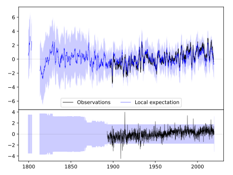
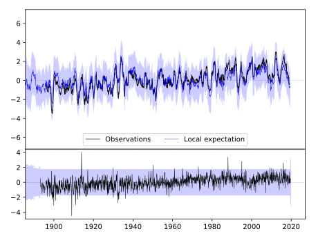
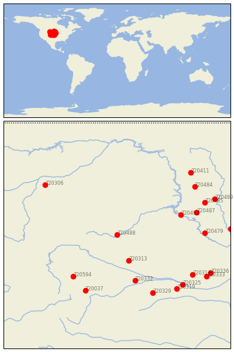

HOT SPRINGS [USA]


| Neighbour | Name | Country | Distance | Lon/Lat | Years |
|---|
| 720488 | HOT SPRINGS | USA | 0 | -103.5, 43.4 | 1893-2019 |
| 720313 | ALLIANCE 1WNW | USA | 152 | -102.9, 42.1 | 1889-2019 |
| 720332 | LODGEPOLE | USA | 266 | -102.6, 41.1 | 1893-2019 |
| 720492 | PIERRE RGNL AP | USA | 279 | -100.3, 44.4 | 1866-2019 |
| 720594 | LARAMIE RGNL AP | USA | 295 | -105.7, 41.3 | 1866-2019 |
| 720037 | FT COLLINS | USA | 338 | -105.1, 40.6 | 1873-2019 |
| 720487 | HIGHMORE 1 W | USA | 342 | -99.5, 44.5 | 1887-2019 |
| 720329 | IMPERIAL | USA | 355 | -101.7, 40.5 | 1890-2019 |
| 720479 | ACADEMY 2NE | USA | 355 | -99.1, 43.5 | 1893-2019 |
| 720317 | BROKEN BOW 2 W | USA | 383 | -99.7, 41.4 | 1893-2019 |
| 720325 | GOTHENBURG | USA | 388 | -100.2, 40.9 | 1893-2019 |
| 720319 | CURTIS 3NNE | USA | 389 | -100.5, 40.7 | 1893-2019 |
| 720485 | FAULKTON 1 NW | USA | 393 | -99.1, 45.0 | 1892-2019 |
| 720306 | HYSHAM 25 SSE | USA | 397 | -107.1, 45.9 | 1892-2019 |
| 720484 | EUREKA | USA | 408 | -99.6, 45.8 | 1893-2019 |
| 720333 | LOUP CITY | USA | 437 | -99.0, 41.3 | 1893-2019 |
| 720489 | MELLETTE 4 W | USA | 438 | -98.6, 45.2 | 1892-2019 |
| 720336 | NORTH LOUP | USA | 439 | -98.8, 41.5 | 1888-2019 |
| 720411 | NAPOLEON | USA | 451 | -99.8, 46.5 | 1889-2019 |
| 720481 | ALEXANDRIA | USA | 460 | -97.8, 43.7 | 1882-2019 |